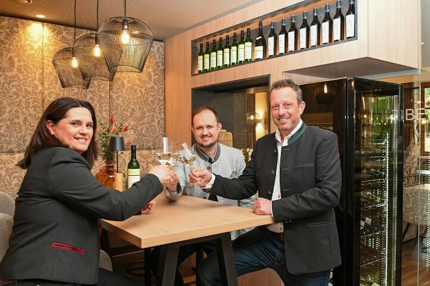
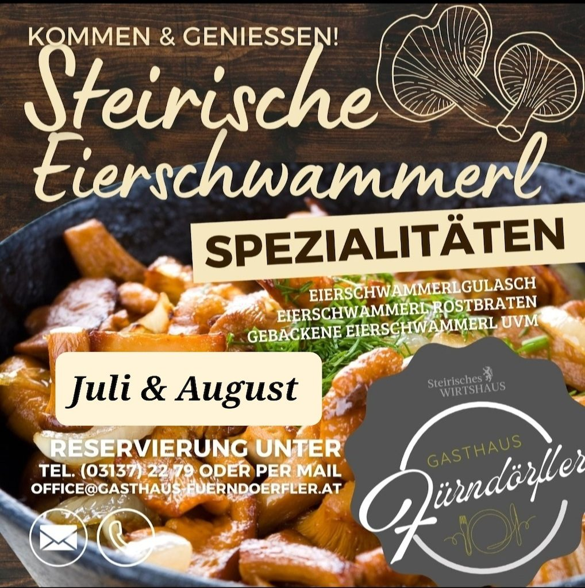

Spezialitätenwochen
Was im Jahr so kommt
Fisch, Lamm, Bärlauch, Spargel, Hitzendorfer Dam-Wild, Schwammerl und Steinpilze – jede Saison bekommt ihre eigene Woche.
Steirisches Wirtshaus · Hitzendorf 228
Ausgehen, einkehren, feiern. Familienbetrieb in dritter Generation, bodenständig, ehrlich und einfach guat – mit besten Zutaten aus der Umgebung.

Willkommen
Als steirisches Wirtshaus und Familienbetrieb in der dritten Generation leben wir echte Gastlichkeit mit Tradition und Herz. Unsere Spezialitäten werden mit besten Zutaten aus der Umgebung zubereitet – bodenständig, ehrlich und einfach guat.
Nehmen Sie sich Zeit, genießen Sie die gemütliche Atmosphäre und lassen Sie sich von unserem Fürnis-Team verwöhnen. Bei uns wird Geselligkeit großgeschrieben – für eine gute Zeit, die man gerne teilt.
Guten Appetit und eine schöne Zeit bei uns! Heidi und Andreas Fürndörfler sowie das gesamte Fürndörfler Team.

Gerade jetzt
Eierschwammerl aus der Region Obdach im Murtal, dazu Kürbis in allen Varianten: Eierschwammerl-Cordon-bleu, Lungenbratenschnitte, cremiges Kürbisrisotto, Pappardelle, Eierschwammerl-Gulasch – und Steinpilze, solange sie wachsen.
Spezialitätenwochen
Fisch, Lamm, Bärlauch, Spargel, Hitzendorfer Dam-Wild, Schwammerl und Steinpilze – jede Saison bekommt ihre eigene Woche.
Immer gefragt
Hubers Landhendl, ganz oder halb – und als Backhendlsalat mit Kürbiskernpanade und Kernölmarinade.
Für Naschkatzen
Selbst gemacht: Mousse-au-Chocolat-Torte, Tagestorte, Hitzendorfer Fruchtstrudel, Kardinalschnitte und mehr.
| Montag & Dienstag | Ruhetag |
|---|---|
| Mittwoch | 10 – 23 Uhr |
| Donnerstag | 10 – 17 Uhr |
| Freitag & Samstag | 10 – 23 Uhr |
| Sonn- & Feiertag | 9 – 18 Uhr |
| Mittwoch | 11 – 20 Uhr |
|---|---|
| Donnerstag | 11 – 16 Uhr |
| Freitag | 11 – 20 Uhr |
| Samstag | 11 – 20 Uhr |
| Sonntag | 11 – 17 Uhr |
| Feiertag | 11 – 17 Uhr |
Speisenbestellung und Küchenannahme jeweils eine halbe Stunde vor Küchenschluss.
Gut zu wissen
Platz für Ihr Fest
Gaststube
Der große Raum für Tafeln und Familienfeiern.
Extrastüberl
Für kleine Runden, die unter sich bleiben wollen.
Stüberl 1. Stock
Eigener Raum im Obergeschoß, auch als Seminarraum.
Gastgarten
Terrasse für die warme Jahreszeit, direkt beim Spielplatz.
Bei besonderen Anlässen ab 50 Personen öffnen wir gerne auch am Ruhetag. Fragen Sie einfach an: +43 3137 2279.
Neu auf dieser Website
Tischreservierung, Take-away-Bestellung, Feier-Anfrage und Gutschein laufen künftig direkt über das Haus statt über Telefon und Social Media.
Kurz & wichtig
Reservierung und Bestellung: +43 3137 2279 oder office@gasthaus-fuerndoerfler.at.
Hitzendorf 228, 8151 Hitzendorf, Graz-Umgebung. Parkplätze beim Haus.